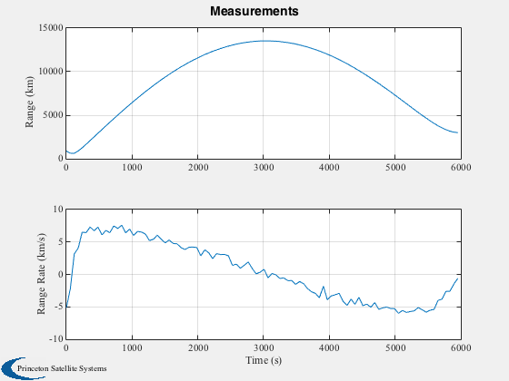
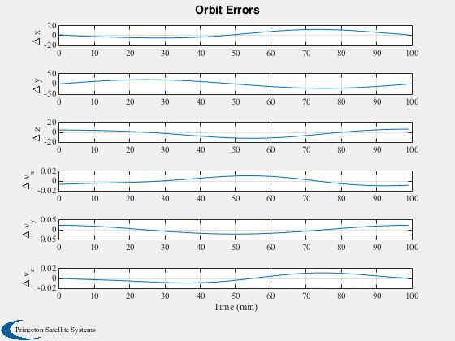

Demonstrate batch orbit determination
Since version 8. ------------------------------------------------------------------------ See also Constant, CreateLatexTable, Plot2D, TimeLabl, Mag, RK4, Unit, BatchLSQOD, GroundStation, OrbitODGenObs, El2RV, Period, RV2El ------------------------------------------------------------------------
Contents
%------------------------------------------------------------------------------- % Copyright (c) 2008 Princeton Satellite Systems, Inc. All rights reserved. %-------------------------------------------------------------------------------
clear variables used in demo
%------------------------------ clear c c2 nOrbits = 1; a = 7100; inc = 95*pi/180; ecc = 0.02; p = Period(a); tEnd = nOrbits*p; nSim = 100; dT = tEnd/(nSim-1); mu = Constant('mu earth'); el = [a inc 0 0 ecc 0]; [r,v] = El2RV(el,mu); x = zeros(6,nSim); x(:,1) = [r;v]; rho = zeros(1,nSim); rhoDot = zeros(1,nSim); rGSEF = 6378*Unit([1;0;0.1]); % Ground station pos. in Earth-Fixed frame omega = 2*pi/86400; [rGS, vGS] = GroundStation(0,omega,rGSEF); dR = r - rGS; dV = v - vGS; rho(1) = Mag(dR); rhoDot(1) = dR'*dV/rho(1); % initial guess... el0 = [1.01*a inc+0.0175 0.01 0.01 ecc-.002 0.01]; [r0,v0] = El2RV(el0,mu); x0 = [r0;v0];
Run the simulation to get the measurements
------------------------------------------
r = [r,zeros(3,nSim-1)]; v = [v,zeros(3,nSim-1)]; rGS = [rGS,zeros(3,nSim-1)]; vGS = [vGS,zeros(3,nSim-1)]; t = 0; for k = 2:nSim x(:,k) = RK4('FOrbCart', x(:,k-1),dT,0,[0;0;0],mu); t = t + dT; r(:,k) = x(1:3,k); v(:,k) = x(4:6,k); [rGS(:,k), vGS(:,k)] = GroundStation(t,omega,rGSEF); dR = r(:,k) - rGS(:,k); dV = v(:,k) - vGS(:,k); rho(k) = Mag(dR); rhoDot(k) = dR'*dV/rho(k); end tvec = (0:(nSim-1))*dT;
ADD RANDOM NOISE to "rho" and "rhoDot" measurements
%---------------------------------------------------- sigmaRho = 5; % km sigmaRhoDot = 0.5; % km/s rho = rho + randn(1,nSim)*sigmaRho; rhoDot = rhoDot + randn(1,nSim)*sigmaRhoDot; Plot2D( (0:nSim-1)*dT, [rho;rhoDot] , 'Time (s)', {'Range (km)','Range Rate (km/s)'}, 'Measurements' )
Estimator data structure
%------------------------- d = struct; d.accTime = []; d.acc = []; d.obsTime = tvec; d.rGS = rGS; d.vGS = vGS; d.dT = dT; d.mu = mu; d.name = 'OrbitODGenObs'; % store initial guess for comparison x0Ref = x0; % prepare the measurement vector: zM = zeros(2*nSim,1); for i=1:length(zM)/2, zM((i-1)*2+1)=rho(i); zM((i-1)*2+2)=rhoDot(i); end % weighting matrix W = eye(2*nSim);
Estimate the orbit using Batch Least Squares
%--------------------------------------------- tic opts = struct('tol',1e-6,'maxIter',10,'verbose',1); % algorithm options [x0,dx0,P0,P0Inv] = BatchLSQOD( x0Ref, zM, W, d, opts ); toc xF = x0; pE = norm(xF(1:3)-x(1:3,1)); vE = norm(xF(4:6)-x(4:6,1)); xErr = xF-x(:,1); fprintf(1,'position error: %f, velocity error: %f\n',pE,vE); elF = RV2El(xF(1:3),xF(4:6),mu); elE = elF - el; elE(3) = acos(cos(elE(3))); elE(4) = acos(cos(elE(4))); elE(6) = acos(cos(elE(6))); fprintf(1,'SMA error: %f\n',elE(1)); fprintf(1,'INC error: %f\n',elE(2)); fprintf(1,'RAAN error: %f\n',elE(3)); fprintf(1,'Per. error: %f\n',elE(4)); fprintf(1,'Ecc. error: %f\n',elE(5)); fprintf(1,'M.A: error: %f\n',elE(6)); % compute expected orbit trajectory, xE [z,xE,tt] = OrbitODGenObs( x0, d ); [t, tL] = TimeLabl( (0:(nSim-1))*dT ); Plot2D( t, x-xE, tL, {'\Delta x' '\Delta y' '\Delta z' '\Delta v_x' '\Delta v_y' '\Delta v_z'}, 'Orbit Errors','lin') cols = {' True ECI State',' Est. ECI State',' Initial Guess',' Final Error'}; disp(cols) disp('==========================================================================') l = {'km' 'km' 'km' 'km/s' 'km/s' 'km/s'}; c = cell(6,5); for k = 1:6 c{k,1} = x(k,1); c{k,2} = xE(k,1); c{k,3} = x0Ref(k,1); c{k,4} = xErr(k,1); c{k,5} = l{k}; end CreateLatexTable( c, 'EstResultsECI', '%16.12f' ) disp(c) fprintf(1,'\n\n'); cols2 = {' True Elements',' Est. Elements',' Initial Guess',' Final Error'}; disp(cols2) disp('==========================================================================') l2 = {'SMA: km' 'INC: rad' 'RAAN: rad' 'PER.: rad' 'ECC -' 'M.ANOM: rad'}; c2 = cell(6,5); for k = 1:6 c2{k,1} = el(1,k); c2{k,2} = elF(1,k); c2{k,3} = el0(1,k); c2{k,4} = elE(1,k); c2{k,5} = l2{k}; end CreateLatexTable( c2, 'EstResultsElem', '%16.12f' ) disp(c2) %-------------------------------------- % PSS internal file version information %--------------------------------------
Norm of perturbation, dx0:
k = 1
mag(dx0) = 193.536069
k = 2
mag(dx0) = 34.223410
k = 3
mag(dx0) = 3.886364
k = 4
mag(dx0) = 0.469222
k = 5
mag(dx0) = 0.001394
k = 6
mag(dx0) = 0.000006
k = 7
mag(dx0) = 0.000003
k = 8
mag(dx0) = 0.000003
k = 9
mag(dx0) = 0.000003
k = 10
mag(dx0) = 0.000001
Elapsed time is 3.934409 seconds.
position error: 5.023703, velocity error: 0.023961
SMA error: 0.183960
INC error: 0.002998
RAAN error: 0.000085
Per. error: 0.010968
Ecc. error: 0.000261
M.A: error: 0.009874
Columns 1 through 3
' True ECI State' ' Est. ECI State' ' Initial Guess'
Column 4
' Final Error'
==========================================================================
[ 6958] [ 6956.3] [ 7040.3] [ -1.6681] 'km'
[ 0] [ -0.16237] [ 55.406] [ -0.16237] 'km'
[ 0] [ -4.7359] [ 142.64] [ -4.7359] 'km'
[ 0] [0.0067297] [-0.14527] [ 0.0067297] 'km/s'
[-0.66623] [ -0.68922] [-0.79515] [ -0.022996] 'km/s'
[ 7.615] [ 7.6149] [ 7.5478] [-0.00015185] 'km/s'
Columns 1 through 3
' True Elements' ' Est. Elements' ' Initial Guess'
Column 4
' Final Error'
==========================================================================
[ 7100] [ 7100.2] [ 7171] [ 0.18396] 'SMA: km'
[1.6581] [ 1.6611] [1.6756] [ 0.0029978] 'INC: rad'
[ 0] [ 6.2831] [ 0.01] [ 8.496e-05] 'RAAN: rad'
[ 0] [ 6.2722] [ 0.01] [ 0.010968] 'PER.: rad'
[ 0.02] [ 0.020261] [ 0.018] [0.00026113] 'ECC -'
[ 0] [0.0098738] [ 0.01] [ 0.0098738] 'M.ANOM: rad'
